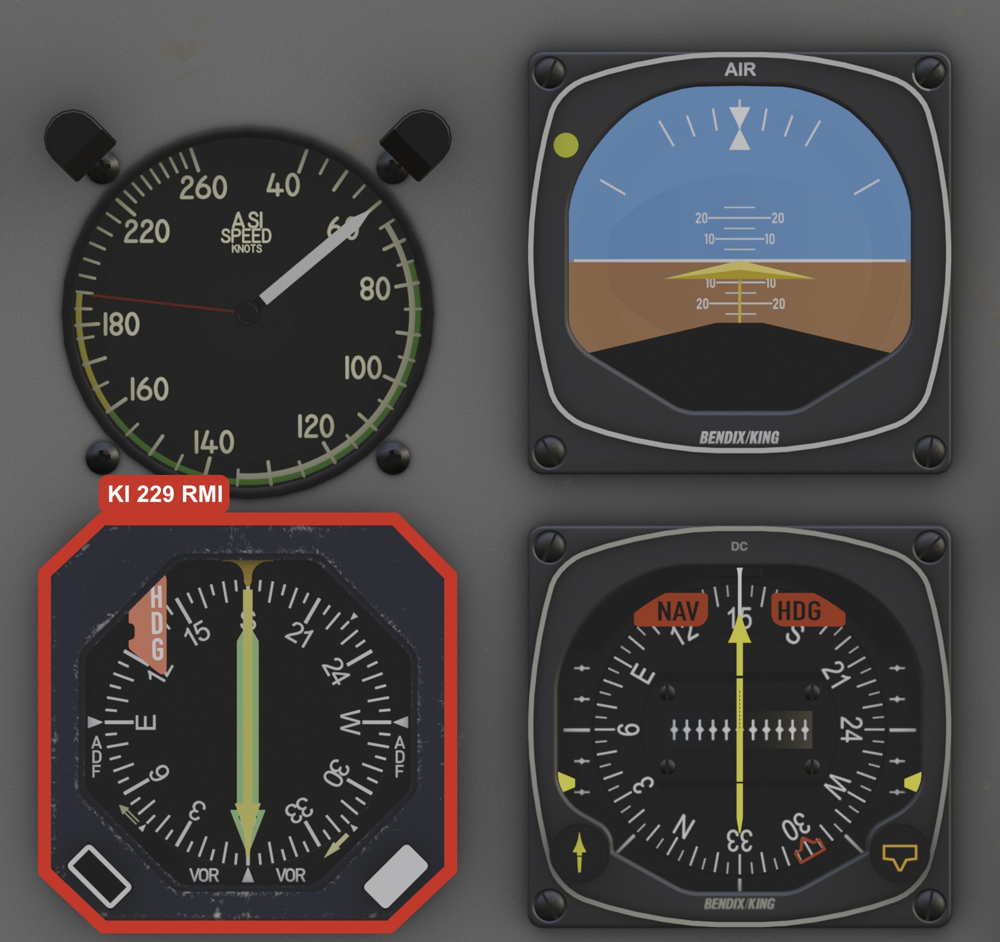
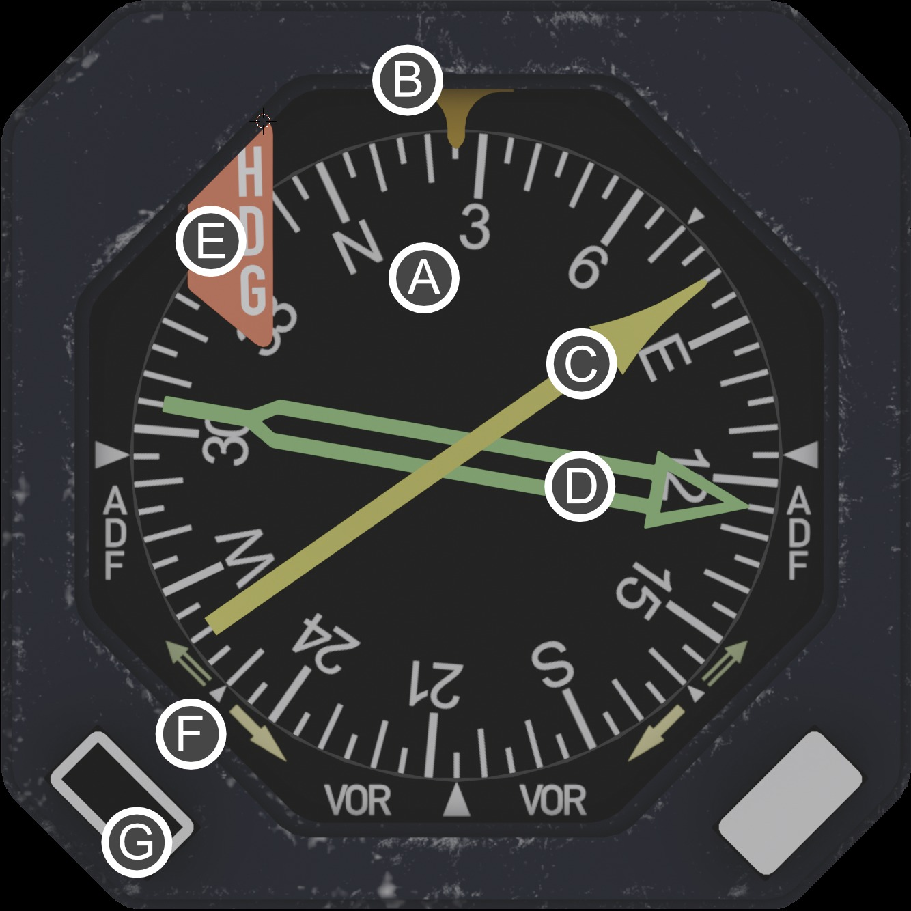
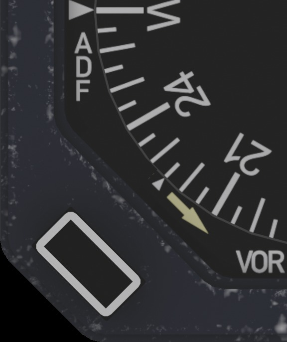
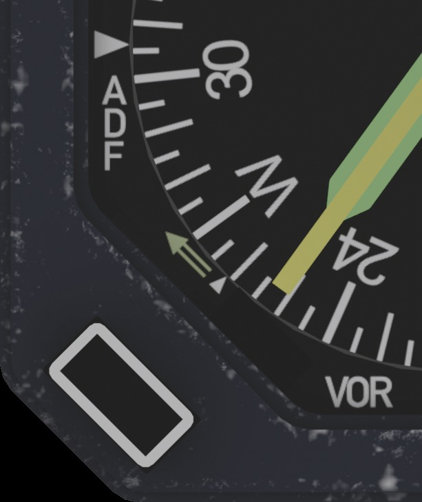

DC-3 Modern Avionics · Operating Guide
KI 229
Bendix/King Radio Magnetic Indicator
Modern Variant Edition
Published by
This guide covers the Bendix/King KI 229 Radio Magnetic Indicator as fitted to the DC-3 Modern variant. It is a standalone companion to the main DC-3 Aircraft Operating Manual, written for the pilot who wants to learn the instrument cockpit-first: what each part of the face means, how to read a bearing off it at a glance, and how it behaves as the aircraft powers up and navigates. The RMI is one display of the larger KCS 55A compass system, and this guide explains just enough of that system for the instrument to make sense; you do not need the rest of the panel to follow it.
A Radio Magnetic Indicator does in one glance what would otherwise take a chart, a compass, and some mental arithmetic. It is a rotating compass card with one or more bearing pointers laid over it. The card always shows your magnetic heading; each pointer always points straight at a tuned navigation station. Read where a pointer crosses the card and you have the magnetic bearing to that station, no twisting of an OBS, no TO/FROM ambiguity, no head-work. It is the single most situationally aware navigation instrument in the panel.
The KI 229 is a Bendix/King Silver Crown RMI, the indicator designed to work with the KCS 55A slaved compass system. In the DC-3 Modern variant it is the display end of that whole system: a remote directional gyro (the KG 102A) and a wingtip flux detector (the KMT 112) feed it a continuously corrected magnetic heading, and the KA 51B slaving control on the panel manages that correction. The RMI repeats all of it on a 3-inch face, and adds two pointers driven by your radios.
In this aircraft the KI 229 carries two pointers. The single-bar pointer (No. 1) is the VOR needle, and it is the switchable one: it follows either the VOR on NAV 1 (your GNS 530) or ADF 1, selected by a button on the face. The double-bar pointer (No. 2) is dedicated solely to ADF, and follows ADF 2. The compass card beneath them is slaved to the KCS 55A.

| Parameter | Specification |
|---|---|
| Type | Radio Magnetic Indicator, 3 ATI (3-inch) |
| Pointers | Two: No. 1 single bar, No. 2 double bar |
| Compass card | Servo-driven, slaved to a remote directional gyro |
| Compass card accuracy | ±2° |
| Pointer accuracy | ±5° |
| Warning flag | HDG flag, monitors heading validity and power |
| Component | Role |
|---|---|
| KG 102A | Remote directional gyro; the heading reference |
| KMT 112 | Wingtip flux detector; senses magnetic north |
| KA 51B | Slaving control; manages the gyro-to-flux correction (panel-mounted) |
| KI 525A | HSI; the primary display of the same system |
| KI 229 | RMI; this instrument |
| Parameter | Specification |
|---|---|
| Supply | 11–33 VDC, 0.75 A, plus 26 VAC 400 Hz for the card servo |
| Required for power | Avionics master on, electrical power present, G2 COMPASS breaker closed |
| Shares power with | The whole KCS 55A system, on one breaker |
The face is dominated by the rotating compass card. A fixed pointer at the very top, the lubber line, marks your heading on the card. Two needles pivot from the center to point at stations. A warning flag lives in the upper left, the source annunciators in the lower corners, and a single button in the lower left switches the No. 1 pointer's source.

| Element | What it is |
|---|---|
| A – Compass card | A full 360° card that rotates so your current magnetic heading sits under the lubber line. It is driven by the slaved compass system, not a free gyro. |
| B – Lubber line | The fixed reference at the top of the face. The number under it is your magnetic heading. |
| C – No. 1 single-bar pointer | The thin, single pointer. The VOR needle, switchable to ADF 1. |
| D – No. 2 double-bar pointer | The wide, double pointer. Dedicated solely to ADF, on ADF 2. |
| E – HDG flag | A warning flag that drops into view when the heading is not valid, or power is lost. |
| F – Source annunciators | Small windows in the lower corners showing which source each pointer is following. |
| G – VOR/ADF button | Switches the No. 1 pointer between VOR and ADF. The No. 2 pointer has no switch. |
If you have never flown an RMI, this is the whole idea in two sentences. The compass card shows your heading under the lubber line. A pointer's head shows the magnetic bearing to the station, read straight off the card where the head points; the pointer's tail shows the radial you are on, the bearing from the station. That is it. There is nothing to set and nothing to interpret.
Compare that to a conventional VOR indicator, where you twist an OBS until the needle centers and then read TO or FROM. The RMI has already done that for you, continuously, for every heading you fly. Want to fly direct to the station? Turn until the pointer head sits on the lubber line; now you are heading straight at it. Want to intercept a radial? The tail tells you which radial you are crossing right now.
The pointer is an arrow. Its head points to the station (bearing TO); its tail points to the radial you are on (bearing FROM). When the head is on the lubber line at the top, you are tracking directly inbound.
Because the card is slaved to magnetic north, the numbers are always magnetic bearings, no wind or variation math required. As you turn, the card rotates under the fixed pointers and the lubber line, and the pointers swing to keep pointing at their stations. The picture stays true through the whole turn.
The KI 229 carries two independent pointers so you can watch two stations at once, typically a VOR and an NDB, or two NDBs. They are told apart by shape: one is a single bar, the other a double bar.
| Pointer | Source in this aircraft | Switchable? |
|---|---|---|
| No. 1, single bar | VOR on NAV 1 (GNS 530), or ADF 1 | Yes — the lower-left button |
| No. 2, double bar | ADF 2 (KR 87 no. 2) | No — always ADF |
The KI 229 follows the usual convention: the double-bar pointer is the ADF needle and the single-bar pointer is the VOR needle. The single bar is also the one that switches, so it can be pointed at an NDB as well — in which case both needles are showing ADF bearings, from different receivers. The lower-left annunciators tell you what each is doing.
Press the button in the lower-left corner of the face to switch the single-bar pointer between VOR and ADF. The source annunciator next to it slides to show the new selection, and the needle sweeps smoothly to its new bearing. The No. 2 double-bar pointer is unaffected; it is wired permanently to ADF 2 and has no switch of its own.
The annunciators in the lower corners are your confirmation of what each needle is doing. The lower-left tracks the No. 1 pointer and reads ADF or VOR depending on the button. The lower-right belongs to the No. 2 pointer and stays on VOR.


The lower-left annunciator, tracking the No. 1 pointer. Pressing the VOR/ADF button slides it between the two.
The compass card is not a free-running gyro that you reset by hand. It is slaved: a remote directional gyro (the KG 102A) holds a steady heading reference, and a wingtip flux detector (the KMT 112) continuously nudges it onto magnetic north so it never drifts. The KA 51B control on the panel manages that slaving and lets you slew the gyro manually if needed. The RMI simply repeats the result, your live, corrected magnetic heading, under the lubber line.
The red HDG flag in the upper-left corner is the heading warning flag. It is in view whenever the displayed heading cannot be trusted: no power to the compass system, a servo fault, or, most commonly, a directional gyro that has not finished spinning up. When the flag is in view, read no heading from the card.
The KG 102A is a real gyroscope, and like any gyro it takes time to spin up to speed. When you first power the avionics the HDG flag will be in view and the card will not be reliable. Warmup takes about a minute when the aircraft is warm, and as long as five minutes in the cold. This is correct behavior, not a fault. When the gyro is up to speed and slaved, the flag snaps up out of sight and the card comes alive. Plan your cold-and-dark start so the compass has time to align before you need it.
Once running, the flag stays stowed unless the compass loses power or the slaving servo cannot hold the heading. Because the KI 229 and the KI 525A HSI share the same KCS 55A system, they raise and stow their heading flags together, if one shows a heading fault, expect the other to as well.
A pointer only means something when it has a station to point at. When it does not, it parks: it drives to the horizontal, pointing straight out to the right (the 3 o'clock position), and sits there. A parked needle is the instrument telling you plainly: "I have nothing to show you." Watch for the park, do not navigate on a needle that is sitting at 3 o'clock.
A VOR pointer parks when:
When the No. 1 pointer is set to VOR, its bearing comes from the GNS 530's navigation receiver. The 530 has its own power-up sequence (the start-up and self-test pages), and its navigation output is not valid until it reaches the live map. So the single-bar pointer stays parked through the 530's boot and only sweeps to the VOR bearing once the unit is fully up. Switched to ADF, the pointer follows the ADF receiver instead and does not wait on the 530.
The ADF pointer behaves a little differently: it follows the ADF receiver directly and does not use the VOR-style park. Its behavior, including any parking with no station received, is set by the ADF receiver itself; see the KR 87 ADF guide.
Powered, warmed up, and slaved: the HDG flag is stowed out of sight, the card reads your magnetic heading under the lubber line and tracks smoothly through turns, and each pointer either points at its tuned station or sits parked at 3 o'clock if it has nothing to show. The source annunciators read the current selection.
| Indication | Meaning | What to do |
|---|---|---|
| HDG flag in view at start-up | Normal. The gyro is still spinning up. | Wait out the warmup (up to ~5 min cold). The flag stows when the compass is valid. |
| HDG flag in view in flight | The compass system has lost power, or the gyro (KG 102A) has failed or tumbled. A slaving fault does not raise this flag; it shows instead as a wrong card heading with no flag. | Check the G2 COMPASS breaker and the avionics bus. Cross-check the magnetic compass; expect the HSI to flag too. |
| A pointer parked at 3 o'clock | That pointer has no usable signal: out of range, a localizer tuned, or its radio off. | Confirm the station is tuned, identified, in range, and its radio is on. Do not navigate on a parked needle. |
| Single-bar pointer parked after switching to VOR | The GNS 530 may still be booting, or no usable VOR is tuned on NAV 1. | Let the 530 finish starting up; confirm a VOR is tuned and identified. |
| Card heading wrong but no flag | The gyro is running but slaved to the wrong heading, or in free (unslaved) mode. | Press SLAVE on the KA 51B to let it pull the card round, or release SLAVE and use CW/CCW to slew it by hand. The slew buttons do nothing while the system is slaved. |
LES DC-3 · KI 229 RMI Operating Guide · DC-3 Modern Avionics Series
Leading Edge Simulations · Published by X-Aviation